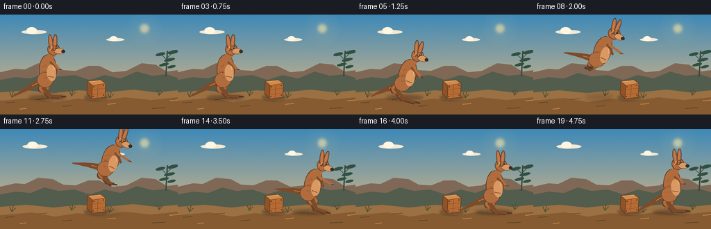
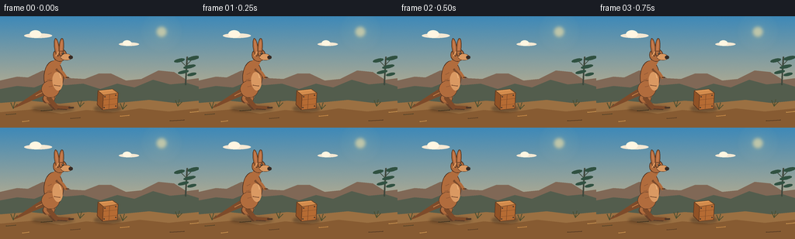

CODING AGENTS AS PIXEL WORLD MODELS
traex/GPT-5.6-Sol · dynamic_spatial_relationship_0032
点击播放 · 原生 RGB 像素
逐轮保存的候选
回放视频、检查图与代码变化。
每份候选均可单独播放。实际图片检查记录在下方工具轨迹中。
候选 01播放与检查图
点击播放 · 原生 RGB 像素

展开代码变化
--- 上一保存版本
+++ 本次保存版本
@@ -0,0 +1,278 @@
+from pathlib import Path
+import math
+import numpy as np
+from PIL import Image, ImageDraw, ImageFilter
+import artifact_io
+
+W, H, N, SS = 256, 144, 20, 4
+GROUND = 119
+rng = np.random.default_rng(3209)
+
+
+def sc(v):
+ return int(round(v * SS))
+
+def pts(seq):
+ return [(sc(x), sc(y)) for x, y in seq]
+
+def ellipse(draw, box, fill, outline=None, width=1):
+ draw.ellipse(tuple(sc(v) for v in box), fill=fill, outline=outline, width=sc(width) if outline else 1)
+
+def polygon(draw, p, fill, outline=None, width=1):
+ draw.polygon(pts(p), fill=fill)
+ if outline:
+ draw.line(pts(list(p)+[p[0]]), fill=outline, width=sc(width), joint='curve')
+
+def line(draw, p, fill, width):
+ draw.line(pts(p), fill=fill, width=sc(width), joint='curve')
+ r = width/2
+ for x,y in (p[0],p[-1]):
+ ellipse(draw,(x-r,y-r,x+r,y+r),fill)
+
+def rot_ellipse(draw, cx, cy, rx, ry, angle, fill, outline=None, width=1, n=48):
+ a = math.radians(angle); ca, sa = math.cos(a), math.sin(a)
+ p=[]
+ for i in range(n):
+ t=2*math.pi*i/n
+ x,y=rx*math.cos(t),ry*math.sin(t)
+ p.append((cx+x*ca-y*sa, cy+x*sa+y*ca))
+ polygon(draw,p,fill,outline,width)
+
+def bezier(p0,p1,p2,p3,n=24):
+ out=[]
+ for i in range(n):
+ t=i/(n-1); q=1-t
+ out.append((q**3*p0[0]+3*q*q*t*p1[0]+3*q*t*t*p2[0]+t**3*p3[0],
+ q**3*p0[1]+3*q*q*t*p1[1]+3*q*t*t*p2[1]+t**3*p3[1]))
+ return out
+
+def tapered_curve(draw, curve, widths, fill):
+ left=[]; right=[]
+ for i,(x,y) in enumerate(curve):
+ if i==0: dx,dy=curve[1][0]-x,curve[1][1]-y
+ elif i==len(curve)-1: dx,dy=x-curve[i-1][0],y-curve[i-1][1]
+ else: dx,dy=curve[i+1][0]-curve[i-1][0],curve[i+1][1]-curve[i-1][1]
+ L=max(1e-5,math.hypot(dx,dy)); nx,ny=-dy/L,dx/L
+ w=np.interp(i,[0,len(curve)-1],widths)/2
+ left.append((x+nx*w,y+ny*w)); right.append((x-nx*w,y-ny*w))
+ polygon(draw,left+right[::-1],fill)
+
+
+def make_background(frame):
+ h,w=H*SS,W*SS
+ yy=np.linspace(0,1,h)[:,None,None]
+ top=np.array([62,137,184],float); bot=np.array([242,190,123],float)
+ sky=top[None,None,:]*(1-yy)+bot[None,None,:]*yy
+ arr=np.repeat(sky,w,axis=1)
+ # fixed fine film texture, almost imperceptible
+ noise=np.random.default_rng(91).normal(0,0.85,(h,w,1))
+ arr=np.clip(arr+noise,0,255).astype(np.uint8)
+ im=Image.fromarray(arr,'RGB')
+ d=ImageDraw.Draw(im,'RGBA')
+ # warm sun and glow
+ glow=Image.new('RGBA',im.size,(0,0,0,0)); gd=ImageDraw.Draw(glow,'RGBA')
+ for r,a in [(27,5),(20,8),(14,14)]: ellipse(gd,(208-r,20-r,208+r,20+r),(255,226,151,a))
+ ellipse(gd,(201.5,13.5,214.5,26.5),(255,231,166,155))
+ im=Image.alpha_composite(im.convert('RGBA'),glow.filter(ImageFilter.GaussianBlur(sc(2))))
+ d=ImageDraw.Draw(im,'RGBA')
+ # distant clouds move very slowly
+ shift=frame*0.12
+ for cx,cy,s,a in [(49+shift,25,1,35),(166+shift*.5,36,.72,26)]:
+ ellipse(d,(cx-18*s,cy-3*s,cx+18*s,cy+3*s),(244,232,211,a))
+ ellipse(d,(cx-11*s,cy-7*s,cx+4*s,cy+3*s),(255,246,226,a))
+ # far mesas and hills
+ polygon(d,[(0,83),(22,78),(36,79),(55,70),(76,72),(91,80),(109,81),(127,74),(143,74),(162,83),(182,81),(204,70),(224,72),(240,82),(256,80),(256,120),(0,120)],(128,104,86,130))
+ polygon(d,[(0,94),(22,90),(44,92),(64,84),(84,89),(107,87),(129,94),(151,87),(173,92),(197,82),(219,88),(240,86),(256,91),(256,121),(0,121)],(83,93,77,170))
+ # eucalyptus at far right
+ line(d,[(239,88),(241,53)],(63,72,61,150),2)
+ line(d,[(241,66),(233,58)],(63,72,61,135),1)
+ line(d,[(241,62),(248,55)],(63,72,61,135),1)
+ for cx,cy,rx,ry in [(231,57,7,2.3),(249,54,8,2.5),(244,65,8,2.2),(236,72,7,2.1),(247,75,6,2)]:
+ rot_ellipse(d,cx,cy,rx,ry,-12,(48,81,65,130))
+ # ground layers
+ polygon(d,[(0,112),(38,109),(77,113),(114,109),(151,112),(192,108),(225,112),(256,109),(256,144),(0,144)],(155,112,66,255))
+ polygon(d,[(0,124),(45,120),(79,126),(111,121),(146,124),(180,119),(217,123),(256,119),(256,144),(0,144)],(135,91,50,255))
+ # ground texture strokes
+ for x,y,l,c in [(8,127,12,(82,67,41,100)),(29,136,8,(205,148,79,85)),(53,122,14,(92,77,44,85)),(91,132,12,(91,63,37,100)),(155,129,11,(207,143,72,80)),(219,135,18,(83,57,35,95)),(245,124,10,(208,153,84,85))]:
+ line(d,[(x,y),(x+l,y-1)],c,1)
+ # tufts
+ for x,y in [(17,119),(103,117),(229,116),(158,120)]:
+ line(d,[(x,y),(x-3,y-7)],(72,78,49,170),1); line(d,[(x,y),(x+2,y-8)],(72,78,49,170),1); line(d,[(x,y),(x+5,y-5)],(72,78,49,160),1)
+ return im
+
+
+def box_shadow(im):
+ lay=Image.new('RGBA',im.size,(0,0,0,0)); d=ImageDraw.Draw(lay,'RGBA')
+ ellipse(d,(121,115,156,124),(38,29,24,90))
+ return Image.alpha_composite(im,lay.filter(ImageFilter.GaussianBlur(sc(1.6))))
+
+def draw_box(im):
+ d=ImageDraw.Draw(im,'RGBA')
+ # small wooden box, fixed at center
+ top=[(126,96),(145,94),(152,99),(133,102)]
+ front=[(133,102),(152,99),(151,119),(132,121)]
+ side=[(126,96),(133,102),(132,121),(125,114)]
+ polygon(d,side,(145,82,38,255),(91,54,31,255),.7)
+ polygon(d,front,(182,107,51,255),(91,54,31,255),.7)
+ polygon(d,top,(211,139,76,255),(104,64,34,255),.7)
+ # boards and nails
+ line(d,[(133,108),(151,106)],(111,64,34,155),.55)
+ line(d,[(132.5,115),(151,113)],(111,64,34,150),.55)
+ line(d,[(141,101),(140,120)],(116,69,37,130),.6)
+ for x,y in [(135,104),(149,102),(134,118),(149,116)]: ellipse(d,(x-.7,y-.7,x+.7,y+.7),(62,52,44,220))
+ # top highlight
+ line(d,[(128,97),(145,95)],(244,178,105,125),.7)
+
+
+def shadow_kangaroo(im,x,height,air):
+ lay=Image.new('RGBA',im.size,(0,0,0,0)); d=ImageDraw.Draw(lay,'RGBA')
+ rx=27-9*air; alpha=int(95-52*air)
+ ellipse(d,(x-rx,116,x+rx,123),(35,28,23,alpha))
+ return Image.alpha_composite(im,lay.filter(ImageFilter.GaussianBlur(sc(2+air*2))))
+
+
+def draw_kangaroo(im, x, y, pose, phase=0.0, lean=0.0):
+ d=ImageDraw.Draw(im,'RGBA')
+ ca,sa=math.cos(math.radians(lean)),math.sin(math.radians(lean))
+ def T(dx,dy): return (x+dx*ca-dy*sa, y+dx*sa+dy*ca)
+ outline=(72,46,31,255); dark=(126,75,42,255); fur=(177,108,61,255); light=(218,153,98,255); hi=(235,177,119,180)
+ # tail behind body, pose dependent
+ b=T(-5,3)
+ if pose=='flight':
+ end=T(-51,7); c1=T(-19,1); c2=T(-39,5)
+ elif pose in ('crouch','land'):
+ end=(x-49,118); c1=(x-18,y+6); c2=(x-38,112)
+ else:
+ end=(x-50,118); c1=(x-17,y+7); c2=(x-38,112)
+ curve=bezier(b,c1,c2,end,30)
+ tapered_curve(d,curve,(11,1.3),dark)
+ # tail sunward edge
+ line(d,curve[:12],(202,133,77,100),1)
+
+ # hind leg points
+ if pose=='flight':
+ if phase < .48:
+ q=phase/.48
+ knee=(-4-4*q,9+2*q); ankle=(-17+20*q,14+4*q); toe=(-31+39*q,12+7*q)
+ else:
+ q=(phase-.48)/.52
+ knee=(-8+14*q,11); ankle=(3+10*q,18+3*q); toe=(8+21*q,19+4*q)
+ elif pose in ('crouch','land'):
+ knee=(-10,12); ankle=(2,23); toe=(22,24)
+ else:
+ knee=(-5,14); ankle=(4,25); toe=(21,26)
+ hip=T(-1,4); kn=T(*knee); an=T(*ankle); to=T(*toe)
+ # far leg darker and slightly offset
+ off=(-2,0)
+ line(d,[(hip[0]-2,hip[1]),(kn[0]-3,kn[1]+1)],(103,63,39,255),11)
+ line(d,[(kn[0]-3,kn[1]+1),(an[0]-2,an[1]+1)],(105,65,40,255),6)
+ line(d,[(an[0]-2,an[1]+1),(to[0]-4,to[1]+1)],(88,59,41,255),4)
+ # near muscular thigh and shin
+ line(d,[hip,kn],fur,14)
+ rot_ellipse(d,kn[0],kn[1],7.4,6.3,lean,fur,outline,.6)
+ line(d,[kn,an],dark,6)
+ line(d,[an,to],dark,4)
+ # long blackish toes
+ line(d,[to,(to[0]+5*ca,to[1]+5*sa)],(72,52,39,255),2)
+ # torso and rump
+ body=T(1,-13)
+ rot_ellipse(d,body[0],body[1],12.5,21.5,lean,fur,outline,.7)
+ rot_ellipse(d,*T(-3,2),11.5,11,lean,fur,outline,.5)
+ # warm belly / pouch plane
+ belly=T(6,-8)
+ rot_ellipse(d,belly[0],belly[1],6.5,12,lean-5,light,None)
+ # pouch rim
+ p1=T(2,-3); p2=T(9,-2)
+ line(d,[p1,p2],(116,70,43,180),1)
+ # chest highlight
+ line(d,[T(7,-25),T(10,-13)],hi,1.3)
+ # neck
+ neck1=T(3,-28); neck2=T(8,-37)
+ line(d,[neck1,neck2],fur,10)
+ # arms: slim, recognizable forepaws
+ shoulder=T(8,-24)
+ if pose=='flight':
+ elbow=T(18,-21); paw=T(27,-18)
+ elif pose in ('crouch','land'):
+ elbow=T(14,-18); paw=T(20,-13)
+ else:
+ elbow=T(13,-19); paw=T(17,-13)
+ line(d,[T(5,-23),T(12,-18),T(16,-13)],(123,75,44,255),3)
+ line(d,[shoulder,elbow,paw],fur,3.4)
+ line(d,[paw,T((paw[0]-x)*ca+(paw[1]-y)*sa+3 if False else 0,0)],fur,1) if False else None
+ # little fingers
+ line(d,[paw,(paw[0]+3*ca,paw[1]+3*sa)],outline,1)
+ # head
+ hc=T(9,-42)
+ rot_ellipse(d,hc[0],hc[1],8.6,8.2,lean,fur,outline,.65)
+ # muzzle projects right
+ muzzle=T(17,-39.5)
+ rot_ellipse(d,muzzle[0],muzzle[1],7.3,4.3,lean+5,light,outline,.55)
+ nose=T(23,-39)
+ rot_ellipse(d,nose[0],nose[1],2.7,2.3,lean,(54,43,37,255))
+ # ears, tall with inner ear
+ for ex,baseang in [(5,-8),(11,4)]:
+ ec=T(ex,-52)
+ rot_ellipse(d,ec[0],ec[1],3.0,11.5,lean+baseang,fur,outline,.65)
+ rot_ellipse(d,ec[0],ec[1]-1,1.05,7.8,lean+baseang,(198,123,78,255))
+ # brow, eye, eye glint
+ eye=T(13,-44)
+ ellipse(d,(eye[0]-1.35,eye[1]-1.25,eye[0]+1.35,eye[1]+1.25),(35,31,27,255))
+ ellipse(d,(eye[0]-.55,eye[1]-.75,eye[0]+.15,eye[1]-.05),(255,239,203,245))
+ line(d,[T(9,-47),T(14,-47)],(91,55,35,180),.7)
+ # face/belly fur highlights
+ line(d,[T(7,-46),T(4,-41)],(234,168,109,100),1)
+ # a few body fur strokes
+ for a,b in [((-6,-17),(-2,-19)),((-7,-10),(-3,-11)),((-5,-1),(-1,-2))]: line(d,[T(*a),T(*b)],(113,67,41,90),.6)
+
+
+def frame_params(i):
+ if i <= 3:
+ return 68,92,'stand',0,0
+ if i==4: return 68,97,'crouch',0,10
+ if i==5: return 71,98,'crouch',0,13
+ if 6 <= i <= 14:
+ u=(i-6)/8
+ # smooth horizontal traverse and a broad jump arc
+ s=u*u*(3-2*u)
+ x=77+(191-77)*s
+ y=91-38*math.sin(math.pi*u)
+ lean=20-7*u
+ return x,y,'flight',u,lean
+ if i==15: return 198,97,'land',1,7
+ if i==16: return 199,94,'stand',1,2
+ return 199,92,'stand',1,0
+
+
+def dust(im,i,x):
+ if i not in (5,6,7,14,15,16): return im
+ lay=Image.new('RGBA',im.size,(0,0,0,0)); d=ImageDraw.Draw(lay,'RGBA')
+ if i in (5,6,7): age=i-5; cx=66-age*2
+ else: age=i-14; cx=194-age
+ for k in range(7):
+ ang=(k*1.7+age*.8); r=3+age*2+k*.35
+ px=cx+math.cos(ang)*r; py=118-math.sin(ang)*1.5-age*.3
+ rr=1.2+age*.65+(k%3)*.35
+ ellipse(d,(px-rr,py-rr*.55,px+rr,py+rr*.55),(212,160,100,max(18,80-age*22-k*4)))
+ return Image.alpha_composite(im,lay.filter(ImageFilter.GaussianBlur(sc(.7))))
+
+
+def render(i):
+ im=make_background(i)
+ im=box_shadow(im)
+ x,y,pose,phase,lean=frame_params(i)
+ air=max(0,min(1,(GROUND-(y+27))/38)) if pose=='flight' else 0
+ im=shadow_kangaroo(im,x,y,air)
+ draw_kangaroo(im,x,y,pose,phase,lean)
+ # Box remains a fixed, clear spatial landmark; in crossing it sits in foreground.
+ draw_box(im)
+ im=dust(im,i,x)
+ return np.asarray(im.convert('RGB').resize((W,H),Image.Resampling.LANCZOS),dtype=np.uint8)
+
+
+def main():
+ frames=np.stack([render(i) for i in range(N)])
+ artifact_io.save(frames,Path(__file__).resolve().parent)
+
+if __name__=='__main__':
+ main()
候选 02播放与检查图
点击播放 · 原生 RGB 像素

展开代码变化
--- 上一保存版本
+++ 本次保存版本
@@ -67,7 +67,7 @@
# fixed fine film texture, almost imperceptible
noise=np.random.default_rng(91).normal(0,0.85,(h,w,1))
arr=np.clip(arr+noise,0,255).astype(np.uint8)
- im=Image.fromarray(arr,'RGB')
+ im=Image.fromarray(arr)
d=ImageDraw.Draw(im,'RGBA')
# warm sun and glow
glow=Image.new('RGBA',im.size,(0,0,0,0)); gd=ImageDraw.Draw(glow,'RGBA')
可观测工具轨迹
实际执行的命令与返回图片。
命令 1exit 0
/bin/bash -lc "cat prompt.txt && printf '\\n---GEN RULES---\\n' && cat GENERATION_RULES.md && printf '\\n---SPEC---\\n' && cat task_spec.json"
命令 2exit 0
/bin/bash -lc "find . -maxdepth 2 -type f -printf '%p\\n' | sort"
命令 3exit 0
/bin/bash -lc 'cat artifact_io.py'
命令 4exit 0
/bin/bash -lc "python - <<'PY'
import PIL, numpy
print('PIL', PIL.__version__, 'numpy', numpy.__version__)
PY"命令 5exit 0
/bin/bash -lc "cat > generate.py <<'PY'
from pathlib import Path
import math
import numpy as np
from PIL import Image, ImageDraw, ImageFilter
import artifact_io
W, H, N, SS = 256, 144, 20, 4
GROUND = 119
rng = np.random.default_rng(3209)
def sc(v):
return int(round(v * SS))
def pts(seq):
return [(sc(x), sc(y)) for x, y in seq]
def ellipse(draw, box, fill, outline=None, width=1):
draw.ellipse(tuple(sc(v) for v in box), fill=fill, outline=outline, width=sc(width) if outline else 1)
def polygon(draw, p, fill, outline=None, width=1):
draw.polygon(pts(p), fill=fill)
if outline:
draw.line(pts(list(p)+[p[0]]), fill=outline, width=sc(width), joint='curve')
def line(draw, p, fill, width):
draw.line(pts(p), fill=fill, width=sc(width), joint='curve')
r = width/2
for x,y in (p[0],p[-1]):
ellipse(draw,(x-r,y-r,x+r,y+r),fill)
def rot_ellipse(draw, cx, cy, rx, ry, angle, fill, outline=None, width=1, n=48):
a = math.radians(angle); ca, sa = math.cos(a), math.sin(a)
p=[]
for i in range(n):
t=2*math.pi*i/n
x,y=rx*math.cos(t),ry*math.sin(t)
p.append((cx+x*ca-y*sa, cy+x*sa+y*ca))
polygon(draw,p,fill,outline,width)
def bezier(p0,p1,p2,p3,n=24):
out=[]
for i in range(n):
t=i/(n-1); q=1-t
out.append((q**3*p0[0]+3*q*q*t*p1[0]+3*q*t*t*p2[0]+t**3*p3[0],
q**3*p0[1]+3*q*q*t*p1[1]+3*q*t*t*p2[1]+t**3*p3[1]))
return out
def tapered_curve(draw, curve, widths, fill):
left=[]; right=[]
for i,(x,y) in enumerate(curve):
if i==0: dx,dy=curve[1][0]-x,curve[1][1]-y
elif i==len(curve)-1: dx,dy=x-curve[i-1][0],y-curve[i-1][1]
else: dx,dy=curve[i+1][0]-curve[i-1][0],curve[i+1][1]-curve[i-1][1]
L=max(1e-5,math.hypot(dx,dy)); nx,ny=-dy/L,dx/L
w=np.interp(i,[0,len(curve)-1],widths)/2
left.append((x+nx*w,y+ny*w)); right.append((x-nx*w,y-ny*w))
polygon(draw,left+right[::-1],fill)
def make_background(frame):
h,w=H*SS,W*SS
yy=np.linspace(0,1,h)[:,None,None]
top=np.array([62,137,184],float); bot=np.array([242,190,123],float)
sky=top[None,None,:]*(1-yy)+bot[None,None,:]*yy
arr=np.repeat(sky,w,axis=1)
# fixed fine film texture, almost imperceptible
noise=np.random.default_rng(91).normal(0,0.85,(h,w,1))
arr=np.clip(arr+noise,0,255).astype(np.uint8)
im=Image.fromarray(arr,'RGB')
d=ImageDraw.Draw(im,'RGBA')
# warm sun and glow
glow=Image.new('RGBA',im.size,(0,0,0,0)); gd=ImageDraw.Draw(glow,'RGBA')
for r,a in [(27,5),(20,8),(14,14)]: ellipse(gd,(208-r,20-r,208+r,20+r),(255,226,151,a))
ellipse(gd,(201.5,13.5,214.5,26.5),(255,231,166,155))
im=Image.alpha_composite(im.convert('RGBA'),glow.filter(ImageFilter.GaussianBlur(sc(2))))
d=ImageDraw.Draw(im,'RGBA')
# distant clouds move very slowly
shift=frame*0.12
for cx,cy,s,a in [(49+shift,25,1,35),(166+shift*.5,36,.72,26)]:
ellipse(d,(cx-18*s,cy-3*s,cx+18*s,cy+3*s),(244,232,211,a))
ellipse(d,(cx-11*s,cy-7*s,cx+4*s,cy+3*s),(255,246,226,a))
# far mesas and hills
polygon(d,[(0,83),(22,78),(36,79),(55,70),(76,72),(91,80),(109,81),(127,74),(143,74),(162,83),(182,81),(204,70),(224,72),(240,82),(256,80),(256,120),(0,120)],(128,104,86,130))
polygon(d,[(0,94),(22,90),(44,92),(64,84),(84,89),(107,87),(129,94),(151,87),(173,92),(197,82),(219,88),(240,86),(256,91),(256,121),(0,121)],(83,93,77,170))
# eucalyptus at far right
line(d,[(239,88),(241,53)],(63,72,61,150),2)
line(d,[(241,66),(233,58)],(63,72,61,135),1)
line(d,[(241,62),(248,55)],(63,72,61,135),1)
for cx,cy,rx,ry in [(231,57,7,2.3),(249,54,8,2.5),(244,65,8,2.2),(236,72,7,2.1),(247,75,6,2)]:
rot_ellipse(d,cx,cy,rx,ry,-12,(48,81,65,130))
# ground layers
polygon(d,[(0,112),(38,109),(77,113),(114,109),(151,112),(192,108),(225,112),(256,109),(256,144),(0,144)],(155,112,66,255))
polygon(d,[(0,124),(45,120),(79,126),(111,121),(146,124),(180,119),(217,123),(256,119),(256,144),(0,144)],(135,91,50,255))
# ground texture strokes
for x,y,l,c in [(8,127,12,(82,67,41,100)),(29,136,8,(205,148,79,85)),(53,122,14,(92,77,44,85)),(91,132,12,(91,63,37,100)),(155,129,11,(207,143,72,80)),(219,135,18,(83,57,35,95)),(245,124,10,(208,153,84,85))]:
line(d,[(x,y),(x+l,y-1)],c,1)
# tufts
for x,y in [(17,119),(103,117),(229,116),(158,120)]:
line(d,[(x,y),(x-3,y-7)],(72,78,49,170),1); line(d,[(x,y),(x+2,y-8)],(72,78,49,170),1); line(d,[(x,y),(x+5,y-5)],(72,78,49,160),1)
return im
def box_shadow(im):
lay=Image.new('RGBA',im.size,(0,0,0,0)); d=ImageDraw.Draw(lay,'RGBA')
ellipse(d,(121,115,156,124),(38,29,24,90))
return Image.alpha_composite(im,lay.filter(ImageFilter.GaussianBlur(sc(1.6))))
def draw_box(im):
d=ImageDraw.Draw(im,'RGBA')
# small wooden box, fixed at center
top=[(126,96),(145,94),(152,99),(133,102)]
front=[(133,102),(152,99),(151,119),(132,121)]
side=[(126,96),(133,102),(132,121),(125,114)]
polygon(d,side,(145,82,38,255),(91,54,31,255),.7)
polygon(d,front,(182,107,51,255),(91,54,31,255),.7)
polygon(d,top,(211,139,76,255),(104,64,34,255),.7)
# boards and nails
line(d,[(133,108),(151,106)],(111,64,34,155),.55)
line(d,[(132.5,115),(151,113)],(111,64,34,150),.55)
line(d,[(141,101),(140,120)],(116,69,37,130),.6)
for x,y in [(135,104),(149,102),(134,118),(149,116)]: ellipse(d,(x-.7,y-.7,x+.7,y+.7),(62,52,44,220))
# top highlight
line(d,[(128,97),(145,95)],(244,178,105,125),.7)
def shadow_kangaroo(im,x,height,air):
lay=Image.new('RGBA',im.size,(0,0,0,0)); d=ImageDraw.Draw(lay,'RGBA')
rx=27-9*air; alpha=int(95-52*air)
ellipse(d,(x-rx,116,x+rx,123),(35,28,23,alpha))
return Image.alpha_composite(im,lay.filter(ImageFilter.GaussianBlur(sc(2+air*2))))
def draw_kangaroo(im, x, y, pose, phase=0.0, lean=0.0):
d=ImageDraw.Draw(im,'RGBA')
ca,sa=math.cos(math.radians(lean)),math.sin(math.radians(lean))
def T(dx,dy): return (x+dx*ca-dy*sa, y+dx*sa+dy*ca)
outline=(72,46,31,255); dark=(126,75,42,255); fur=(177,108,61,255); light=(218,153,98,255); hi=(235,177,119,180)
# tail behind body, pose dependent
b=T(-5,3)
if pose=='flight':
end=T(-51,7); c1=T(-19,1); c2=T(-39,5)
elif pose in ('crouch','land'):
end=(x-49,118); c1=(x-18,y+6); c2=(x-38,112)
else:
end=(x-50,118); c1=(x-17,y+7); c2=(x-38,112)
curve=bezier(b,c1,c2,end,30)
tapered_curve(d,curve,(11,1.3),dark)
# tail sunward edge
line(d,curve[:12],(202,133,77,100),1)
# hind leg points
if pose=='flight':
if phase < .48:
q=phase/.48
knee=(-4-4*q,9+2*q); ankle=(-17+20*q,14+4*q); toe=(-31+39*q,12+7*q)
else:
q=(phase-.48)/.52
knee=(-8+14*q,11); ankle=(3+10*q,18+3*q); toe=(8+21*q,19+4*q)
elif pose in ('crouch','land'):
knee=(-10,12); ankle=(2,23); toe=(22,24)
else:
knee=(-5,14); ankle=(4,25); toe=(21,26)
hip=T(-1,4); kn=T(*knee); an=T(*ankle); to=T(*toe)
# far leg darker and slightly offset
off=(-2,0)
line(d,[(hip[0]-2,hip[1]),(kn[0]-3,kn[1]+1)],(103,63,39,255),11)
line(d,[(kn[0]-3,kn[1]+1),(an[0]-2,an[1]+1)],(105,65,40,255),6)
line(d,[(an[0]-2,an[1]+1),(to[0]-4,to[1]+1)],(88,59,41,255),4)
# near muscular thigh and shin
line(d,[hip,kn],fur,14)
rot_ellipse(d,kn[0],kn[1],7.4,6.3,lean,fur,outline,.6)
line(d,[kn,an],dark,6)
line(d,[an,to],dark,4)
# long blackish toes
line(d,[to,(to[0]+5*ca,to[1]+5*sa)],(72,52,39,255),2)
# torso and rump
body=T(1,-13)
rot_ellipse(d,body[0],body[1],12.5,21.5,lean,fur,outline,.7)
rot_ellipse(d,*T(-3,2),11.5,11,lean,fur,outline,.5)
# warm belly / pouch plane
belly=T(6,-8)
rot_ellipse(d,belly[0],belly[1],6.5,12,lean-5,light,None)
# pouch rim
p1=T(2,-3); p2=T(9,-2)
line(d,[p1,p2],(116,70,43,180),1)
# chest highlight
line(d,[T(7,-25),T(10,-13)],hi,1.3)
# neck
neck1=T(3,-28); neck2=T(8,-37)
line(d,[neck1,neck2],fur,10)
# arms: slim, recognizable forepaws
shoulder=T(8,-24)
if pose=='flight':
elbow=T(18,-21); paw=T(27,-18)
elif pose in ('crouch','land'):
elbow=T(14,-18); paw=T(20,-13)
else:
elbow=T(13,-19); paw=T(17,-13)
line(d,[T(5,-23),T(12,-18),T(16,-13)],(123,75,44,255),3)
line(d,[shoulder,elbow,paw],fur,3.4)
line(d,[paw,T((paw[0]-x)*ca+(paw[1]-y)*sa+3 if False else 0,0)],fur,1) if False else None
# little fingers
line(d,[paw,(paw[0]+3*ca,paw[1]+3*sa)],outline,1)
# head
hc=T(9,-42)
rot_ellipse(d,hc[0],hc[1],8.6,8.2,lean,fur,outline,.65)
# muzzle projects right
muzzle=T(17,-39.5)
rot_ellipse(d,muzzle[0],muzzle[1],7.3,4.3,lean+5,light,outline,.55)
nose=T(23,-39)
rot_ellipse(d,nose[0],nose[1],2.7,2.3,lean,(54,43,37,255))
# ears, tall with inner ear
for ex,baseang in [(5,-8),(11,4)]:
ec=T(ex,-52)
rot_ellipse(d,ec[0],ec[1],3.0,11.5,lean+baseang,fur,outline,.65)
rot_ellipse(d,ec[0],ec[1]-1,1.05,7.8,lean+baseang,(198,123,78,255))
# brow, eye, eye glint
eye=T(13,-44)
ellipse(d,(eye[0]-1.35,eye[1]-1.25,eye[0]+1.35,eye[1]+1.25),(35,31,27,255))
ellipse(d,(eye[0]-.55,eye[1]-.75,eye[0]+.15,eye[1]-.05),(255,239,203,245))
line(d,[T(9,-47),T(14,-47)],(91,55,35,180),.7)
# face/belly fur highlights
line(d,[T(7,-46),T(4,-41)],(234,168,109,100),1)
# a few body fur strokes
for a,b in [((-6,-17),(-2,-19)),((-7,-10),(-3,-11)),((-5,-1),(-1,-2))]: line(d,[T(*a),T(*b)],(113,67,41,90),.6)
def frame_params(i):
if i <= 3:
return 68,92,'stand',0,0
if i==4: return 68,97,'crouch',0,10
if i==5: return 71,98,'crouch',0,13
if 6 <= i <= 14:
u=(i-6)/8
# smooth horizontal traverse and a broad jump arc
s=u*u*(3-2*u)
x=77+(191-77)*s
y=91-38*math.sin(math.pi*u)
lean=20-7*u
return x,y,'flight',u,lean
if i==15: return 198,97,'land',1,7
if i==16: return 199,94,'stand',1,2
return 199,92,'stand',1,0
def dust(im,i,x):
if i not in (5,6,7,14,15,16): return im
lay=Image.new('RGBA',im.size,(0,0,0,0)); d=ImageDraw.Draw(lay,'RGBA')
if i in (5,6,7): age=i-5; cx=66-age*2
else: age=i-14; cx=194-age
for k in range(7):
ang=(k*1.7+age*.8); r=3+age*2+k*.35
px=cx+math.cos(ang)*r; py=118-math.sin(ang)*1.5-age*.3
rr=1.2+age*.65+(k%3)*.35
ellipse(d,(px-rr,py-rr*.55,px+rr,py+rr*.55),(212,160,100,max(18,80-age*22-k*4)))
return Image.alpha_composite(im,lay.filter(ImageFilter.GaussianBlur(sc(.7))))
def render(i):
im=make_background(i)
im=box_shadow(im)
x,y,pose,phase,lean=frame_params(i)
air=max(0,min(1,(GROUND-(y+27))/38)) if pose=='flight' else 0
im=shadow_kangaroo(im,x,y,air)
draw_kangaroo(im,x,y,pose,phase,lean)
# Box remains a fixed, clear spatial landmark; in crossing it sits in foreground.
draw_box(im)
im=dust(im,i,x)
return np.asarray(im.convert('RGB').resize((W,H),Image.Resampling.LANCZOS),dtype=np.uint8)
def main():
frames=np.stack([render(i) for i in range(N)])
artifact_io.save(frames,Path(__file__).resolve().parent)
if __name__=='__main__':
main()
PY
python generate.py
python - <<'PY'
import numpy as np
z=np.load('pixels.npz')['pixels']
print(z.shape,z.dtype, z.min(),z.max())
PY"命令 6exit 0
/bin/bash -lc "python - <<'PY'
from pathlib import Path
p=Path('generate.py')
s=p.read_text().replace(\"Image.fromarray(arr,'RGB')\", \"Image.fromarray(arr)\")
p.write_text(s)
PY
python generate.py
python - <<'PY'
import numpy as np
from PIL import Image
from pathlib import Path
files=sorted(Path('frames').glob('*.png'))
assert len(files)==20
for f in files:
im=np.asarray(Image.open(f))
assert im.shape==(144,256,3) and im.dtype==np.uint8
z=np.load('pixels.npz')['pixels']
assert z.shape==(144,256,20) and z.dtype==np.uint32
print('validated:',len(files),'RGB frames, packed artifact',z.shape)
PY"视觉工具实际返回图片 1

保存候选 2 份；完成命令 6 次；可验证图片返回 1 张。原始 API 响应与完整日志保留在本地。